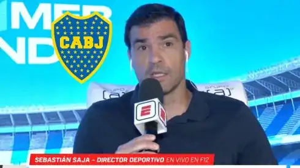

Saja Le Hizo Una Advertencia A Boca
Saja fue consultado sobre el duelo que se viene y advirtió al Xeneize: “A este grupo le gusta ese tipo de partidos, son partidos muy grandes y que tienen mucho atractivo“. De esta manera, dejó en claro que están “preparados” para este tipo de encuentros.